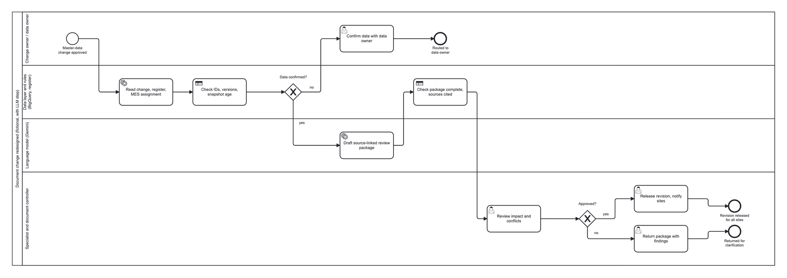

A1 · Approved change
9 November
Box-A becomes Box-B from 9 November. The product-data steward has approved this date.
Second lesson · About 5 minutes
Before AI drafts a change note, someone must decide which source has authority.
Fictional production example. No live systems or operating instructions.
A reference label is changing for variant V210 at plant P1.
A1 · Approved change
Box-A becomes Box-B from 9 November. The product-data steward has approved this date.
N1 · Planning note
A local coordinator asks whether the change could start earlier. The note has no approval.
Which date should the draft use? Say why, and name one check that must happen before release.
Route before you choose technology: first the SAP or controlled-register record, then fixed rules for IDs and dates. A language model helps write the note after those checks.
Use 9 November. A1 is approved. N1 is only a suggestion and cannot replace it.
For variant V210 at plant P1, A1 schedules the reference-label change from 9 November. N1 suggests an earlier date without approval; the process owner must confirm the document impact before release.
The note keeps the conflict visible. A specialist still checks the affected documents and approves release. AI does not make that decision.
Today every site searches its own documents and sends a separate request. In the redesigned process one approved change triggers one shared run: rule checks before and after the language model, one specialist review, one release for all sites.
